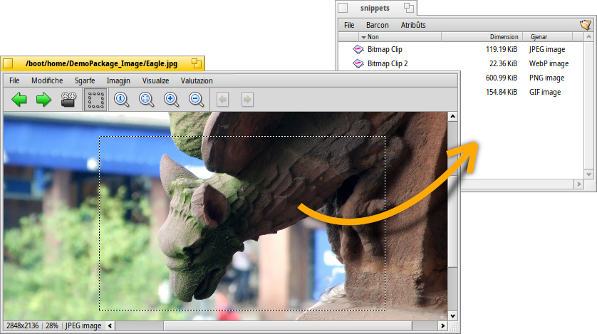

MostreImagjin
MostreImagjin
| Deskbar: | Nissune vôs, di norme inviât fasint dopli-clic suntun file supuartât. | |
| Posizion: | /boot/system/apps/ShowImage | |
| Impostazions: | ~/config/settings/ShowImage_settings |
MostreImagjin ti permet di viodi i imagjins in ducj i formâts che a son supuartâts midiant Traduzion dâts. I gnûfs formâts a vegnin ricognossûts in automatic cuant che il lôr tradutôr al ven zontât al sisteme. Chest al è stât fat, par esempli, pai file des iconis vetoriâls di Haiku, lis imagjins di WonderBrush o cuant che lis imagjins WebP a son deventadis disponibilis.
MostreImagjin al furnìs funzions minimis di modifiche par taiâ fûr, voltâ e ribaltâ lis imagjins e par salvâlis intun altri formât.
 Visualizâ
Visualizâ

Il menù al da la pussibilitât di fâ partî une di dutis lis imagjins che a stan intune cartele (o di un barcon che al à i risultâts di une interogazion) e stabilî un di 2 a 20 seconts.
Altris comants si aplichin ae imagjin cumò visualizade (cence cambiâ la dimension dal barcon):
al mostre la imagjin cuntun fatôr di ingrandiment dal 100%.
al torne a limitâ la imagjin tal ricuadri dal barcon, p.e. dopo vêle ingrandide o vê ridimensionât il barcon.
Cun e si spostisi dentri e si tirisi fûr cuntun increment dal 10%. L'ingrandiment al ven fat ancje cu la rudielute dal mouse; par scori ator intune imagjin plui grande dal barcon al baste tignî fracât il clic di çampe e strissinâ il mouse ator.
Dôs impostazions no si aplichin ae imagjin al moment visualizade e a vegnin tignudis iniments cuant che si navighe di une imagjin a chê dopo:
al apliche un filtri une vore svelt cuant che si ingrandìs par ridusi lis liniis cretosis e produsi une risultât plui morbit.
al slungjarà lis imagjins plui piçulis par jemplâ il ricuadri atuâl dal barcon.
Dopo si à une modalitât cuntune opzio par fâ che e sorepon il non dal file in bas te imagjin.
Par ultin, al mostrarà/platarà i controi grafics:

De çampe ae diestre: Imagjin precedente, imagjin sucessive, proiezion diapositivis (in modalitât plen visôr), modalitât selezion, dimension origjinâl, adate al barcon, ingrandìs, impiçulìs, pagjine precedente e sucessive (cuant che si à un formât imagjin come TIFF che al permet plui pagjinis intun sôl file, viôt chi sot).
La plui part dai comants doprâts plui dispès a son disponibii ancje dal menù contestuâl che si à cul clic diestri su pe imagjin. Util cuant che si è in modalitât plen visôr.
Sgarfâ

Dopo vê viert une imagjin tu puedis esplorâ daurman dutis lis altris imagjins inte sô cartele (o tal barcon dai risultâts di une interogazion) fracant ↑/↓ o ←/→. Tu puedis viodi la selezion che e cambie, tal barcon di Tracker.
E esist une maniere rapide par vierzi la cartele de imagjin che si sta viodint e ancje navigâ su chês superiôrs e tes sot-cartelis. Al funzione come cu la navigazion a sgarfâ in Tracker fasint clic inte aree des informazions inte sbare di stât che e mostre la dimension e il formât de imagjin atuâl.
Cjalant il menù , si viôt un altri gjenar di navigazion: Cualchi formât di imagjin, come il TIFF, a puedin tignî dentri plui pagjinis intun file sôl. I comants come and ti permetin di navigâ tra chês pagjinis.
Modificâ

Il menù al ufrìs cualchi manipolazion di imagjin necessarie pai visualizadôrs di imagjins: la rotazion e il ribaltament de imagjin. Fâs câs dut câs, che i dâts de imagjin visualizade no vignaran modificâts. Al ven zontât al file dome un atribût, cussì che tu le viodarâs voltade o ribaltade ancje lis prossimis voltis che tu le vierzarâs.
al vierzarà lis preferencis pal Fonts, par stabilî la figure atuâl tant che imagjin pai tiei spazis di lavôr.
Ritaiâ e je une altre funzione che cualchi volte e covente. Par definî il ricuadri di taiâ, tu puedis passâ ae dal menù e meti jù un ricuadri cul boton di çampe dal mouse. Se no tu desideris che prime si cambi modalitât, tu puedis creâ il ricuadi in "modalitât normâl" fasint un sempliç CTRL intant che tu strissinis cul clic di çampe, che tal câs che tu sbalis alc al massim ti fâs scori ator pe imagjin.
o ESC al gjavarà il ricuadri de selezion.
Il cjapitul chi sot al mostre ce mût salvâ la aree ritaiade.
Salvâ e convertî
Par salvâ o convertî une imagjin intun dai formâts disponibii, tu puedis clamâ la normâl vôs dal menù , po dopo selezione il formât e sielç il non dal file.
Dispès plui svelt, soredut cuant che al è za viert il barcon di Tracker cu la cartele di destinazion, al è il doprâ il strissine e mole.

Cheste e je ancje la finalitât dal parsore menzonât ritaiâ, che si selezioni un ricuadri, come descrit parsore, o che si sielzi par vê dute la imagjin. Po dopo, strissinâ e molâ la selezion sul scritori o su cualsisei barcon di Tracker al crearà une gnove imagjin (dal ritai) tal stes formât de imagjin origjinâl.
Par salvâ intun altri formât, eseguìs il strissinament cul mouse ma cul boton di diestre e sielç un formât dal menù contestuâl che si vierzarà cuant che tu molarâs la imagjin.
Scurtis di tastiere
Chi e je une liste des scurtis plui utilis:
| ← / ↑ | Imagjin precedente | |
| → / ↓ | Prossime imagjin | |
| CANC | Môf te scovacere | |
| + | Ingrandìs | |
| - | Impiçulìs | |
| 0 | Dimension origjinâl (ingrandiment al 100%) | |
| 1 | Adate al barcon | |
| ALT INVIE | Comute modalitât plen visôr (ancje cun dopli-clic) | |
| CTRL | Intat che si ten fracât CTRL tu creis un ricuadri di selezion cence passâ in maniere esplicite ae modalitât selezion. |